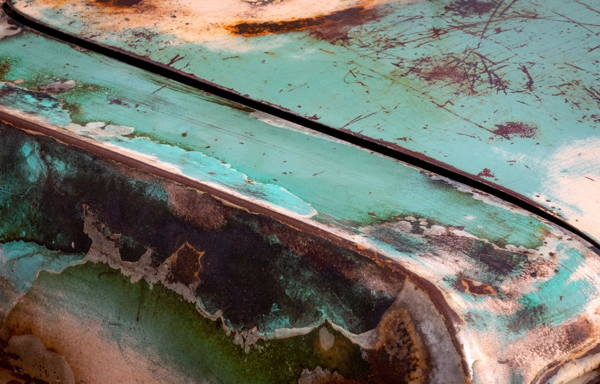

Rust repair cuts out or treats corroded metal, rebuilds the area and repaints it so the rust stops spreading. Halif Auto Repair and Collision repairs rust on cars, trucks and SUVs at 105 Ash St in Whitby, Ontario.
Rust is one of the main things we fix, not an afterthought. Text photos of the bubbling or the hole to 905-730-6089 for an estimate.
Where rust shows up on Durham vehicles
- Wheel arches, where salt and water get thrown up and sit
- Rocker panels under the doors
- The bottoms of doors, where water drains and collects
- Around the tailgate, trunk lid and wheel wells
- Under old stone chips and deep scratches
If the paint is bubbling, the rust is not on the surface. It is underneath the paint, working outwards. By the time it looks bad from three metres away, the metal behind it has usually gone.

Why rust is worse here
Durham Region puts salt brine down on regional roads before storms arrive, then plows and salts through the event. Roads are patrolled seven days a week in winter.
That is good for traction and hard on metal. CAA points out that road salt keeps corroding a vehicle even after the temperature rises back above freezing, that rust can weaken a car’s structure, and that washing your car every one to two weeks in heavy winter weather is worth doing.
So in Whitby, rust is not an unlucky thing that happens to old cars. It is a normal consequence of five months of salted road, and it is much cheaper to deal with early.
Sources: Durham Region — regional road maintenance · CAA — stop the creep of rust

How a rust repair works
Find the edge
We open up the area to see how far the corrosion actually goes. It is almost always wider than the bubbling suggests.
Remove it
Affected metal is cut out or taken back to clean, sound material. Painting over rust only buys a few months.
Rebuild
The area is repaired back to shape and sealed, so water and salt have nowhere to sit.
Prime and paint
Primed, sprayed to match your colour and blended into the panels beside it.
What we will tell you honestly
Not every rusty vehicle is worth repairing, and we are not going to pretend otherwise to win a job. When rust has gone past the body panels into the parts of the vehicle that hold it together, repairing the outside does not fix the real problem.
Send photos and we will tell you which one you are looking at — a straightforward panel repair, or a vehicle where the money is better spent elsewhere.
Questions about rust
Can all rust be fixed?
Surface rust and rust that has eaten through a body panel can usually be cut out, rebuilt and repainted. Rust that has reached the parts of the vehicle holding it together is a different conversation, and we will tell you honestly if that is what we find. Send photos and we will take a look.
Will the rust come back?
Rust comes back when it is painted over instead of removed. The repair has to take out the affected metal, treat what is left and seal the area properly before paint. Washing salt off through the winter makes a big difference afterwards.
Is it worth fixing rust on an older car?
Often yes, if you plan to keep the vehicle and the rust is still in the body panels. Catching it at the bubbling stage is far cheaper than waiting until a panel has a hole in it. Send a photo and we will give you a straight answer.
When is the best time to fix rust?
Before winter. Durham Region salts its roads through the whole season, and salt keeps corroding metal even after the temperature climbs back above freezing. A small repair done in autumn does not become a panel replacement by spring.
Where does rust usually start on cars in Durham?
Wheel arches, rocker panels under the doors, the bottoms of doors, and around the edges of the tailgate or trunk. These are the places salt and water collect and sit. Bubbling paint is rust working outwards from underneath.
Text us a photo. Get a straight answer.
Send three photos of the damage to 905-730-6089 and we will tell you what the repair involves and what it costs.